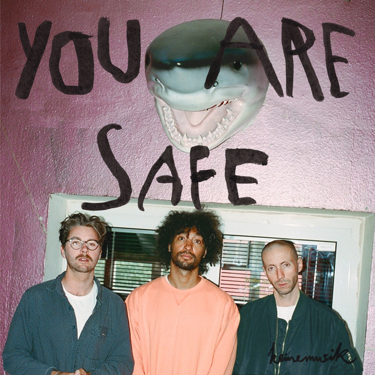

Keinemusik - You Are Safe



Información del álbum facilitada por discogs.com:
Fecha de lanzamiento: 2018
Géneros: Electronic
Estilos: Deep House, Tech House, Nu-Disco
Pais: Spain
Votos: Media de 5.0 con 1 votos
Sello: Essential (3)
Vocals - Penny Stevens-Keller
Tracklist:
A1. You Are Safe (DJ Tennis Remix) (feat. DJ Tennis)
A2. Guilt Trip (Frankey & Sandrino Remix) (feat. Frankey & Sandrino)
B1. Muyè (Black Coffee Remix) (feat. Blackcoffee)
B2. Operator (Honey Dijon Remix) (feat. Honey Dijon)
C1. You Are Safe (Solomun Remix) (feat. Solomun)
C2. Lover (Gerd Janson Remix) (feat. Gerd Janson)
D1. Guilt Trip (Johannes Albert Remix) (feat. Johannes Albert)
D2. Bumper (No Work All Play Remix) (feat. No Work All Play)